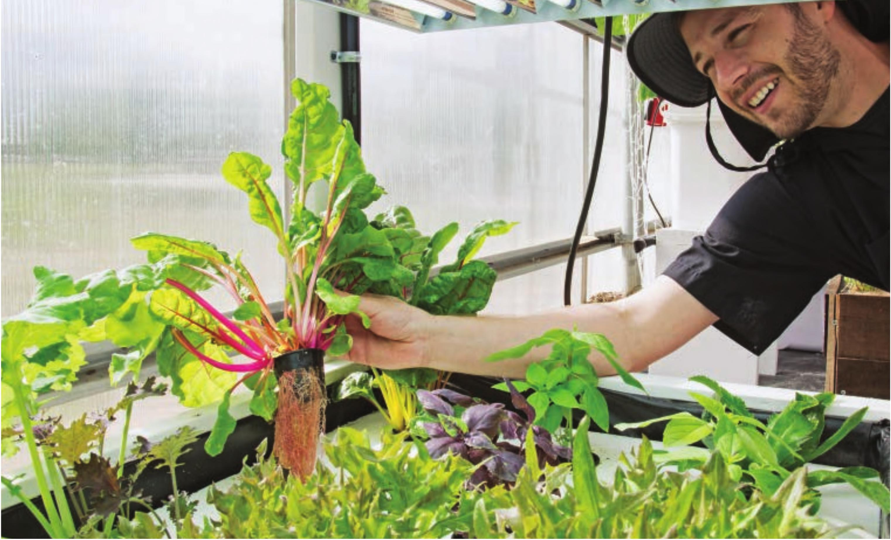

Colorful Swiss chard roots make chard a very fun plant to grow in a floating raft garden. Great • Basil • Celery/celeriac • Chives • Dill • Fennel • Kale • Lettuce • Mustard greens • Nasturtium • Sorrel • Swiss chard • Watercress Not Optimal, but Possible • Arugula • Beets • Carrots • Cilantro • Dwarf peppers • Dwarf tomato • Marigolds • Mint • Parsley • Radishes • Spinach • Strawberries LOCATIONS Floating raft gardens can be placed indoors, outdoors, or in a greenhouse. Outdoors they may have problems if not protected from rain. The rainwater will dilute the nutrient solution and wash away the nutrients. Floating raft systems often hold a lot of water, and this might not be ideal indoors. If the system is not properly placed or built there could be potential for leaks and flooding indoors. Water is very heavy too, so floating raft systems should not be installed on floors with weight limitations. Floating raft systems benefit from aeration, but for most crops it is not necessary. I've grown beautiful heads of lettuce and basil in floating raft gardens with no aeration in 90°F weather. These crops will benefit from aeration, often with faster growth and reduced potential for root diseases and nutrient issues, but floating raft gardens can thrive without electricity. There are affordable options for solar-powered air pumps if you wish to keep your floating raft garden off-grid yet receive the benefits of aeration. SIZING Floating raft systems can be designed for countertops or large fields. Very small floating rafts have the potential of getting unstable when supporting large, top-heavy crops, but they are great for leafy greens. Large rafts are capable of holding more weight, but they should be handled with care when they are holding heavy mature crops because they can break under the weight when lifted out of the reservoir. Most rafts are made from 2 x 4-foot foam boards or 4 x 8-foot foam boards cut in half. Most floating raft gardens are thus rectangular with widths in increments of 2 feet and lengths in increments of 4 feet. Don't feel limited to rectangles, though; these foam boards can be cut to any shape. I've seen circular kiddie pools transformed into floating raft gardens with foam boards cut to size. HYDROPONIC GROWING SYSTEMS 51
